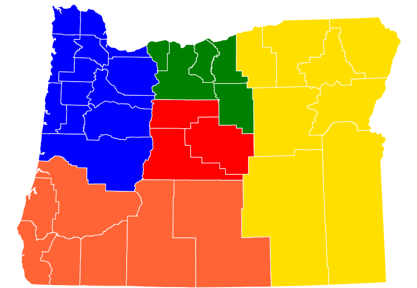
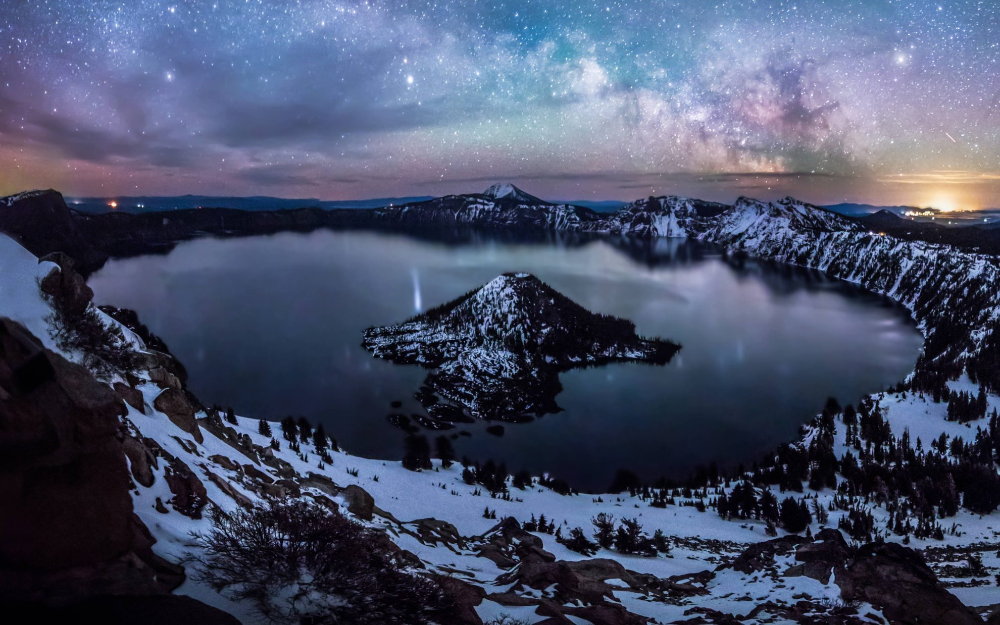

Klamath Falls, Oregon
Oregon's City of Sunshine
Working For You
| City | Founded | Region  | Population | Urbanicity | Affluence |
|---|---|---|---|---|---|
| Klamath Falls | 1867 | Southern Oregon | 21,888 | Rural | Below Average |
Did you know?

- The city was named Linkville when it was founded in 1867. It was updated in 1892 to "Klamath Falls", after the Chinookan word for "people", which the indigenous peoples called the area. 3
- Crater Lake, located just north of Klamath Falls, is a 594 meter lake in a volcanic crater. It is the deepest lake in the United States, and ranks third in the world for average depth. 4
- The Klamath and Modoc peoples were forced onto a reservation together by the U.S. Army in the 1870's. The Modoc were mistreated by the Klamath, their former adversaries, leading to the Modoc War of 1872-1873. The campaign cost the U.S. Cavarlry around $500,000 at the time and caused the death of 17 indigenous peoples and 83 Americans. The remaining 153 Modoc warriors were sent to modern-day Oklahoma, where they were kept as PoW's until 1909. 5
- Klamath Falls gets its nickname, "Oregon's City of Sunshine", because it receives 300 days of sun each year. 3